Array
Un array (también conocido como arreglo o matriz) es una estructura de datos en programación que permite almacenar y organizar un conjunto de valores relacionados del mismo tipo en una sola variable.
En términos simples, un array es una colección ordenada de elementos del mismo tipo (como números, cadenas de texto, objetos, etc.) que se almacenan en una memoria contigua y se acceden mediante un índice numérico. El índice comienza en cero y aumenta en uno para cada elemento adicional en el array.
Por ejemplo, si queremos almacenar una lista de cinco números enteros, podemos crear un array de cinco elementos donde cada elemento es un número entero. Luego podemos acceder a cada elemento individualmente utilizando su índice correspondiente (0 para el primer elemento, 1 para el segundo elemento, y así sucesivamente).

Metodos Mas importantes de los arrays
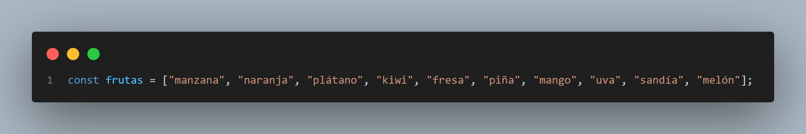- push(): Agrega un elemento al final del array
- pop(): Elimina el último elemento del array 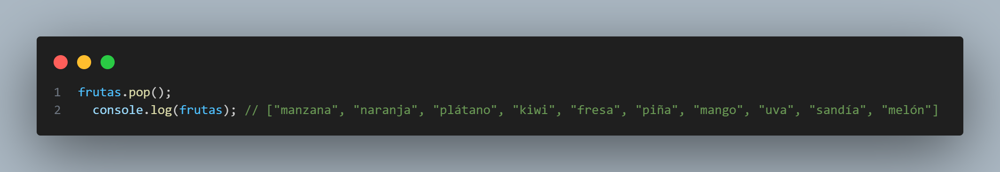
- shift(): Elimina el primer elemento del array 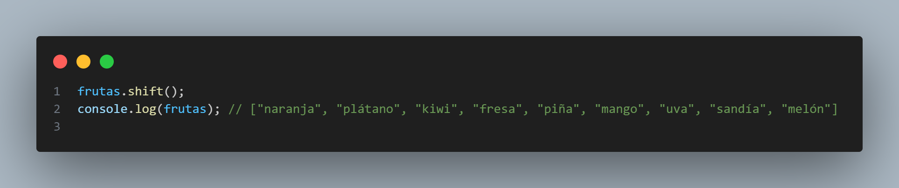
- unshift(): Agrega un elemento al principio del array 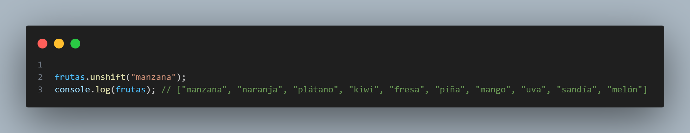
- splice(): Permite agregar o eliminar elementos de cualquier posición del array 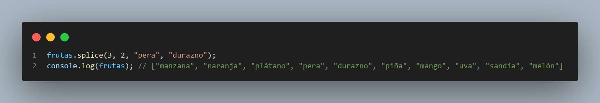
- slice(): Crea un nuevo array a partir de una porción del array original 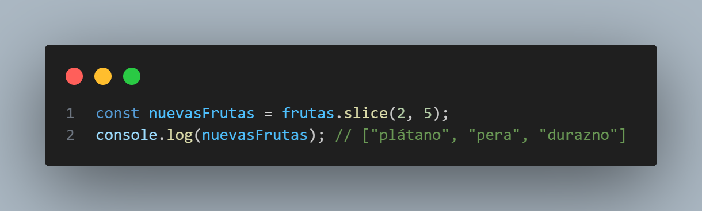
- concat(): Une dos o más arrays en uno solo 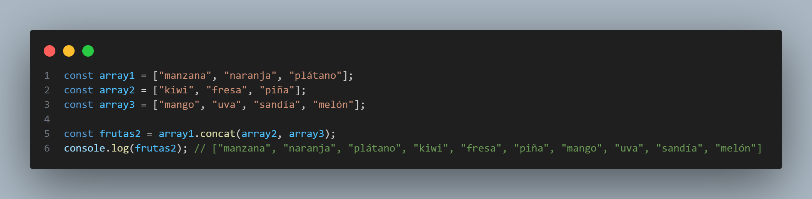
- join(): Convierte un array en una cadena de caracteres, separando cada elemento por un carácter especificado 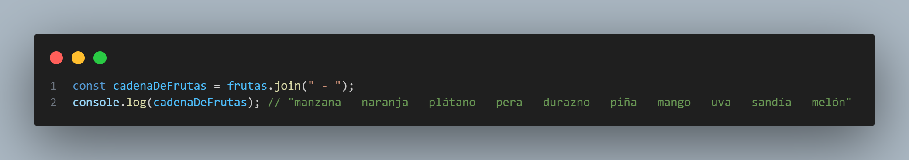
- indexOf(): Busca un elemento en el array y devuelve su índice 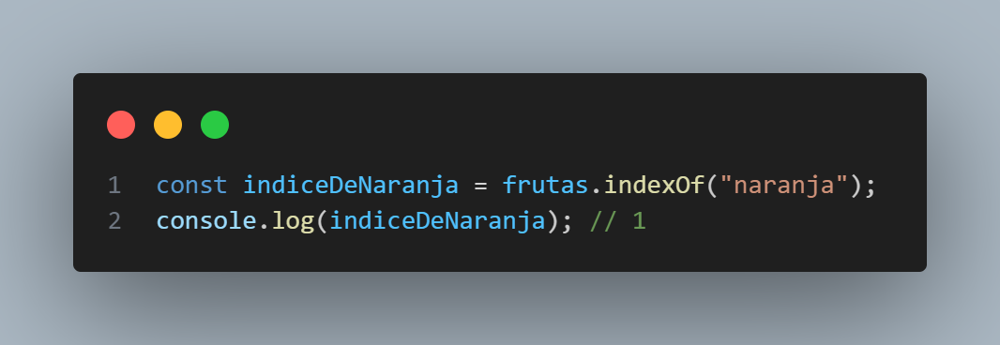
- forEach(): Ejecuta una función para cada elemento del array 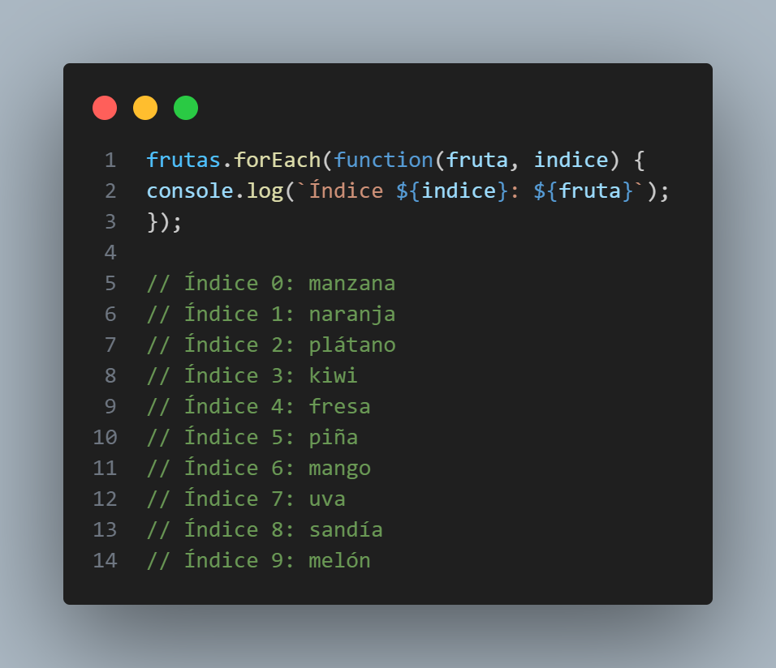
- reverse(): Invierte el orden de los elementos en un array. 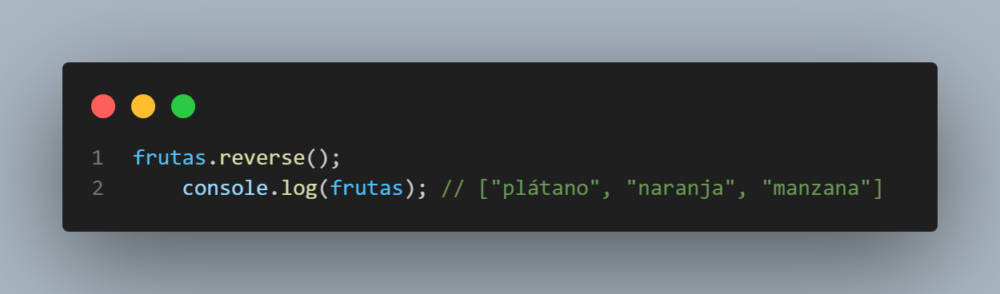
- filter(): Crea un nuevo array con todos los elementos que cumplan una condición determinada. 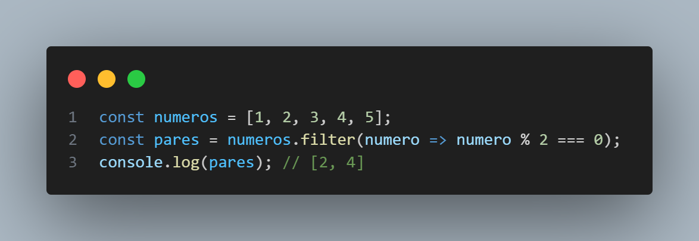
- reduce(): Reduce todos los elementos de un array a un solo valor, aplicando una función acumulativa. 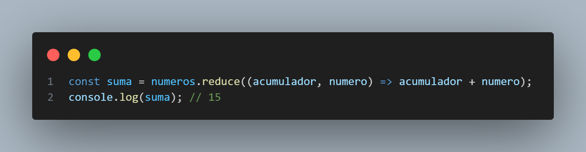
- find(): Devuelve el primer elemento del array que cumple una condición determinada. 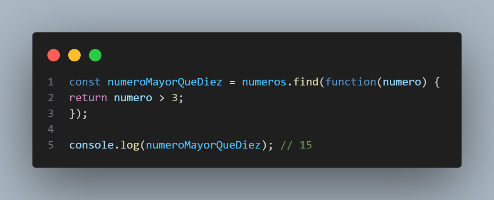

TEMARIO
FACIL
- Encuentra los tres elementos más grandes en una matriz 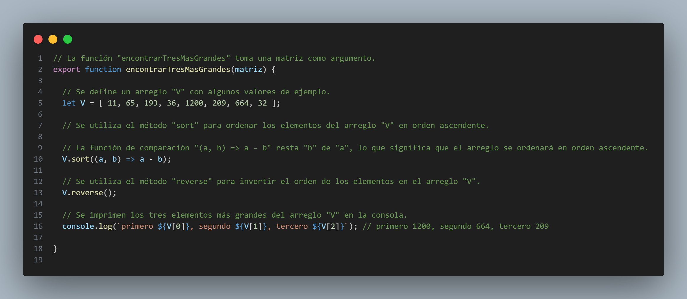
- Encuentra el segundo elemento más grande en una matriz 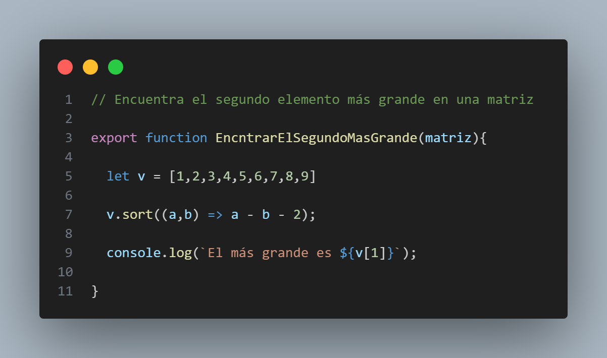
- Mover todos los ceros al final de la matriz 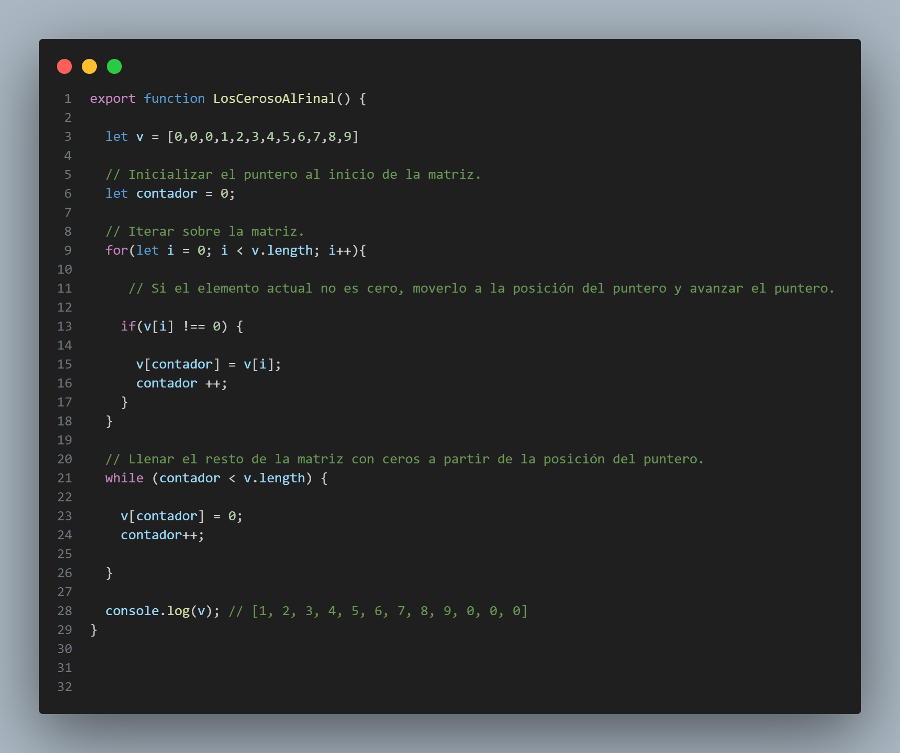
- Reorganizar la matriz de manera que las posiciones pares sean mayores que las impares
- Reorganizar una matriz en forma máxima mínima utilizando la técnica de dos punteros
- Segregar números pares e impares
- Algoritmo de inversión para la rotación de matrices
- Imprime la rotación a la izquierda de la matriz en el tiempo O(n) y el espacio O(1)
- Ordenar una matriz en forma de onda
- Ordenar una matriz que contiene de 1 a n valores
- Contar el número de triángulos posibles
- Imprimir todos los elementos distintos de una matriz de enteros dada
- Encuentre el elemento que aparece una vez en Array donde todos los demás elementos aparecen dos veces
- Líderes en una matriz
- Encuentra un subarreglo con la suma dada
Medio
- Encuentra los tres elementos más grandes en una matriz
- Encuentra el segundo elemento más grande en una matriz
- Mover todos los ceros al final de la matriz
- Reorganizar la matriz de manera que las posiciones pares sean mayores que las impares
- Reorganizar una matriz en forma máxima mínima utilizando la técnica de dos punteros
- Segregar números pares e impares
- Algoritmo de inversión para la rotación de matrices
- Imprime la rotación a la izquierda de la matriz en el tiempo O(n) y el espacio O(1)
- Ordenar una matriz en forma de onda
- Ordenar una matriz que contiene de 1 a n valores
- Contar el número de triángulos posibles
- Imprimir todos los elementos distintos de una matriz de enteros dada
- Encuentre el elemento que aparece una vez en Array donde todos los demás elementos aparecen dos veces
- Líderes en una matriz
- Encuentra un subarreglo con la suma dada
- Reorganizar una matriz tal que arr[i] = i
- Reorganiza números positivos y negativos en tiempo O(n) y espacio extra O(1)
- Reordenar una matriz de acuerdo con los índices dados
- Buscar un elemento en una matriz ordenada y rotada
- Encuentre el recuento de rotación en la matriz ordenada rotada
- K-ésimo subarreglo contiguo de suma más grande
- Encuentra el menor número que falta
- Matriz de diferencias | Consulta de actualización de rango en O(1)
- Beneficio máximo comprando y vendiendo una acción como máximo dos veces
- El subarreglo más pequeño con una suma mayor que un valor dado
- Conteo de inversión en Array usando Merge Sort
- Ordenar una matriz de 0s, 1s y 2s
- Combinar dos matrices ordenadas con O(1) espacio adicional
- Elemento mayoritario
- Técnica de dos punteros
- Encuentra un elemento pico
- Encuentra un triplete que sume un valor dado
- Incremento mínimo por k operaciones para igualar todos los elementos
- Índice de equilibrio de una matriz
Dificil
- Encuentre k números con la mayoría de las ocurrencias en la matriz dada
- Algoritmo de MO
- Algoritmo de descomposición de raíz cuadrada (Sqrt)
- Tabla dispersa
- Consulta de suma de rango usando tabla dispersa
- Consulta de rango mínimo (descomposición de raíz cuadrada y tabla dispersa)
- Consultas LCM de rango
- Combinar clasificación de árbol para estadísticas de orden de rango
- Número mínimo de saltos para llegar al final
- Optimización del espacio usando manipulaciones de bits
- Ordenar una matriz casi ordenada (o K ordenada)
- Encuentre el valor máximo de Sum(i*arr[i]) con solo rotaciones en una matriz dada permitida
- Mediana en una secuencia de enteros (enteros en ejecución)
- Construya una matriz a partir de su matriz de suma de pares
- Suma máxima de equilibrio en una matriz
- Triplete de diferencia más pequeño de tres matrices
- Encuentra todos los tripletes con suma cero